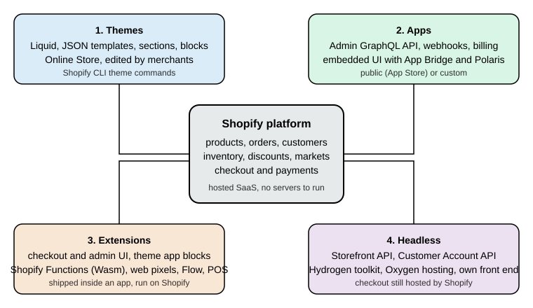

Shopify Overview
|
This content was generated with the assistance of AI and should be verified against the official documentation before being relied on in production. |
This subsection documents how to build on Shopify, the hosted e-commerce platform. It was written against the
Admin, Storefront, Customer Account and Functions API version 2026-10, Shopify CLI 5.0.0 (published 2026-10-27,
requires Node.js 22.12 or later), Hydrogen 2026-10 (@shopify/hydrogen 2026.10.2), the React Router app template
package @shopify/shopify-app-react-router 4.0.0, Polaris web components 2.0 (stable since 2026-10-22),
Dawn 16.0.0, Horizon 4.3.0 and Theme Check 3.31.0. Every fact was checked on 2026-10-27. Shopify is a service, not a
download: pages describe the platform as it behaves on that date, and the What’s New and Deprecation Timeline page tracks what changes afterwards.
This page applies to every plan; where a capability is limited to Shopify Plus or to a feature preview it says so.
The page explains what Shopify is, how its API versions and plans work, the four surfaces a developer builds on, how the pages of this subsection fit together as a learning path, and then lists every page. It is the entry point of the Shopify subsection of the E-commerce section.
What Shopify is
Shopify is a multi-tenant software-as-a-service commerce platform. A merchant opens a shop (a store, reachable at
<shop>.myshopify.com and at any custom domains attached to it), and Shopify runs everything underneath it: the
database, the web servers, the CDN, the checkout, payment processing, fraud analysis, tax calculation, inventory,
order management, backups and upgrades. There is no server to provision, no PHP or Node.js version to maintain, no
database schema to migrate and no security patch to apply on the merchant side. All shops run the same code, and
changes reach them through versioned APIs and dated releases.
That model has three consequences that shape everything else in this subsection.
-
Extension happens at defined seams. You cannot modify Shopify core code, install a module into it or override a class. Instead Shopify publishes surfaces (theme files, GraphQL APIs, webhooks, extension points, Functions) and you build on those. A capability that Shopify has not exposed as a seam is not available, which is why the Shopify Functions and Checkout Extensibility pages are central: they are the supported seams for checkout behaviour.
-
Deprecations arrive on a published schedule. Because the platform is shared, an old way of doing things is retired on a date for everyone. During 2024 to 2027 that has happened to
checkout.liquid, Shopify Scripts, the REST Admin API as a place for new apps, script tags and non-expiring offline access tokens (see Retirements that matter). -
Commercial terms are part of the design. Which plan a shop is on decides some technical capabilities (checkout customisation on the Information, Shipping and Payment steps, Functions inside custom apps, number of locations, B2B catalogs), and Shopify Payments or a third-party gateway decides transaction fees. The Plans and Shopify Plus page covers this in detail.
Shopify publishes much of its tooling as open source (Liquid, Shopify CLI, Hydrogen, the Theme Check linter, the Dawn, Horizon and Skeleton reference themes, the app templates), but the platform itself is closed. For market context, W3Techs reports Shopify at 32.4% of the sites whose e-commerce system it can detect and at 5.3% of all sites (checked 2026-10-27).
Shop, channels and the Admin
The Shopify admin is where merchants manage products, orders, customers, discounts, inventory, markets, apps and settings. It is itself an app platform: an embedded app is a page inside the admin. Products are published to sales channels: the Online Store channel (the theme-rendered storefront), Point of Sale for physical retail, the Headless channel for custom storefronts, Shop, social and marketplace channels, and AI channels. Developers mostly meet two of them: Online Store (themes) and Headless (the Storefront API).
Editions and the release rhythm
Shopify announces its product changes twice a year in an Edition, and developers announce theirs continuously in the
developer changelog at shopify.dev/changelog. The two recent editions are Winter '26 "Renaissance" (2025-12-10) and
Spring '26 "Everywhere" (2026-06-17). There is no Summer '26 edition. For build work the changelog and the API
version table below are the authoritative sources; editions are marketing summaries.
API versions
Shopify’s APIs are versioned by quarter. A version is named YYYY-MM, released at 17:00 UTC on the first day of the
quarter, and supported for at least 12 months, which gives at least 9 months of overlap with its successor. The
status on 2026-10-27 was:
| Version | Status | Accessible until |
|---|---|---|
2025-04, 2025-07, 2025-10 |
Unsupported |
Already inaccessible (2026-04-16, 2026-07-16 and 2026-10-16, each at 15:00 UTC) |
2026-01 |
Stable |
2027-01-16 |
2026-04 |
Stable |
2027-04-16 |
2026-07 |
Stable |
2027-07-16 |
2026-10 |
Latest stable (released 2026-10-01) |
2027-10-16 |
2027-01 |
Release candidate (releases 2027-01-01) |
2028-01-16 |
There are three kinds of version: stable, release candidate (published on the date the previous quarter’s version
goes stable, so integrations can test early) and unstable (updated continuously). A request for a version that is no
longer accessible is not rejected: it falls forward to the oldest accessible stable version and the response header
X-Shopify-API-Version shows which version actually served it. Deprecated fields are removed in a later release; the
2026-10 schema marks automaticDiscounts as removed in 2027-01 and currentBulkOperation as superseded by
bulkOperations. The versioned APIs are the GraphQL Admin API, Storefront API, Customer Account API, the Function
APIs, Webhooks, Events and the Partner API. Some surfaces are not versioned and can change at any time: Liquid, the
Ajax API, the App Bridge APIs, the Web Pixels API, OAuth endpoints, Customer Privacy API and Storefront Web
Components. Libraries follow their own major versions (Hydrogen, Hydrogen React, the app libraries).
Source: Shopify docs: API versioning
The four build surfaces
Everything a developer builds for Shopify belongs to one of four surfaces, and most real projects combine several.

| Surface | What you write | Where it runs | Main pages |
|---|---|---|---|
Themes |
Liquid templates, sections, blocks, snippets, CSS, JavaScript and JSON settings |
On Shopify, rendered for the Online Store channel. Merchants edit sections and blocks in the theme editor. |
Theme Architecture, Liquid Language, Sections and Theme Blocks |
Apps |
A web application (the template uses React Router and Node.js) configured by |
On your own hosting. An embedded app is shown inside the admin. A public app is listed in the Shopify App Store, a custom app serves one merchant. |
|
Extensions |
Small packages declared in an app and deployed with it: checkout and customer account UI, admin UI, POS UI, theme app extensions, web pixels, Flow triggers and actions, and Shopify Functions |
On Shopify infrastructure (sandboxed JavaScript or WebAssembly), not on your server |
Checkout Extensibility, Shopify Functions, Theme App Extensions and Web Pixels |
Headless |
Your own storefront using the Storefront API (and the Customer Account API), optionally built with the Hydrogen toolkit |
On your hosting, or on Oxygen, Shopify’s hosting for storefronts. Checkout remains Shopify-hosted. |
Themes
A theme controls how the Online Store looks and behaves. Since Online Store 2.0 (2021) a theme is a folder with a
fixed layout: layout/ (page shells such as theme.liquid), templates/ (mostly JSON files that list which sections
a page contains), sections/, blocks/, snippets/, assets/, config/ (settings_schema.json and
settings_data.json) and locales/. Pages are composed from sections that merchants add, remove and reorder in the
theme editor; sections contain blocks; theme blocks are reusable and can nest. Logic is written in Liquid, an open
source template language created at Shopify and maintained as a Ruby gem (5.14.0 on 2026-10-27), extended by Shopify
with tags such as schema, render, content_for and section, and with 155 filters, 33 tags and 142 objects in the
reference snapshot used for this subsection. Liquid itself is not versioned: it evolves continuously.
Three reference themes exist. Skeleton is the minimal starting point installed by shopify theme init. Dawn
(16.0.0) is the long-standing Online Store 2.0 reference. Horizon (4.3.0) is the newer reference built around theme
blocks. The Shopify Theme Store accepts only themes built on Skeleton, and requires a minimum average Lighthouse
performance score of 60. The Reference Themes page
compares them.
Themes cannot run server-side code of their own. Anything that needs a database or a secret is done by an app, reached either through the storefront (an app block or an app proxy) or by writing data into Shopify objects the theme reads (metafields and metaobjects, see Metafields and Metaobjects).
Apps
An app is a web application that integrates with Shopify through APIs. It authenticates to a shop, receives events as webhooks, calls the Admin GraphQL API and, if embedded, renders its interface inside the Shopify admin with App Bridge and the Polaris web components. Two kinds exist.
-
A public app is distributed through the Shopify App Store to many merchants. It must pass App Store requirements (GraphQL-only for new apps since 2025-04-01, the three mandatory privacy compliance webhooks, expiring offline access tokens, Shopify-based billing) and is created and managed in the Dev Dashboard.
-
A custom app is built for a single merchant (or one organisation) and installed directly. It has the same APIs but a smaller review burden. A custom app that contains a Shopify Function requires a Shopify Plus shop.
The Shopify CLI scaffolds an app with shopify app init (the --template option accepts reactRouter or none; the
older Remix template is legacy), links it to the Dev Dashboard and runs a development tunnel with shopify app dev.
The REST Admin API is legacy since 2024-10-01 and new public apps must use GraphQL; no REST shutdown date has been
published, so existing REST integrations keep running while new work targets GraphQL. The
Admin GraphQL API page covers cost-based rate limits, pagination and the
migration from REST.
Extensions
An extension is a unit of code that lives in an app project, is described by a shopify.extension.toml file, and is
deployed with shopify app deploy so that Shopify runs it. The CLI’s template catalogue (shopify app generate extension --template <id>) lists 81 templates on 2026-10-27, which group into these families:
-
Checkout and customer account UI extensions (
checkout_ui,customer_account_ui,post_purchase_ui): written in Preact against Polaris web components with a 64 KB compiled bundle limit. UI extensions on the Information, Shipping and Payment checkout steps are Shopify Plus only; Thank you and Order status extensions work on all plans. -
Admin UI extensions (
admin_action,admin_block,admin_printand others) and POS UI extensions (pos_action,pos_block,pos_smart_grid), covered by Flow, POS and Admin Extensions. -
Theme app extensions (
theme_app_extension): app blocks and app embed blocks that merchants place in a theme without the app editing theme files. They replace script tags, which can no longer be created since 2026-10-01 and stop running on 2027-03-01. -
Web pixels (
web_pixel): sandboxed analytics code subscribed to customer events with consent handling. -
Shopify Functions: Wasm modules that customise discounts, cart transforms, delivery options, payment methods, validation, fulfilment constraints and order routing. They replaced Shopify Scripts, which stopped executing on 2026-06-30. Functions are written in Rust (strongly recommended) or JavaScript, with limits of 256 kB for the binary, 11 million instructions for a cart of up to 200 lines and an input query of at most 3000 bytes.
-
Flow triggers and actions, payments extensions, tax calculation and others.
Headless
A headless storefront replaces the theme with your own front end, which reads catalogue data and manages carts
through the Storefront API and signs customers in through the Customer Account API. The Storefront API accepts a
public access token for browser and mobile use, a private token for server-side use, and (since recent API versions)
tokenless access for a subset of data. The @inContext directive selects country and language, and in 2026-10 also a
channel.
Hydrogen changed shape with the 2026-10 release (generally available 2026-10-14): it is now a framework-agnostic toolkit with a core entry point and React and Vue bindings, with a React Router starter for Oxygen and a Next.js starter, rather than the full-stack Remix and React Router framework that earlier releases (2026-04 and before) were. That earlier framework is documented as Legacy Hydrogen. Oxygen is Shopify’s hosting for storefronts and is included at no extra charge on the paid plans. Checkout is always Shopify-hosted, so headless projects still customise it through checkout extensions. The Storefront API documentation does not declare any maintenance mode; what is deprecated is the old Liquid-theme customer account system (legacy customer accounts, deprecated 2026-02-26) in favour of the Customer Account API.
Choosing a surface
| If you need to … | Start with |
|---|---|
Change how pages look, add sections merchants can arrange |
A theme (the reference theme you copy, then sections and blocks) |
Read or change products, orders, customers or inventory from outside Shopify, react to events, charge merchants |
An app with the Admin GraphQL API and webhooks |
Change discounts, shipping options, payment options or cart validation rules |
A Shopify Function inside an app |
Add fields, messages or upsells in checkout or on the Thank you page |
A checkout UI extension |
Add storefront behaviour from an app without editing the theme |
A theme app extension (app block or app embed) |
Build a custom storefront in your own stack |
Headless, with the Storefront API and optionally Hydrogen |
The tools
The Shopify CLI is the single command line for all four surfaces. Install it with npm install -g @shopify/cli@latest
(or Homebrew on macOS: brew tap shopify/shopify && brew install shopify-cli). It needs Node.js 22.12 or later, a
package manager (npm, Yarn 1.x or pnpm) and Git; the documentation says Git 2.28.0 and CLI 5.0.0 raised the
requirement to 2.38.0 for Git operations. Its topics on 2026-10-27 are app, auth, config, doc, hydrogen,
organization, store, theme and upgrade, plus the root commands search, version, commands and help.
Since CLI 4.0.0 (2026-05-21) it follows semantic versioning and updates itself (not in CI, not for project-local
installs and not across major versions; disable with shopify config autoupgrade off). CLI 5.0.0 (2026-10-27) is the
"typed JSON output" major release: commands accept --json, --json-schema and --no-input, which makes them
scriptable. Set SHOPIFY_CLI_NO_ANALYTICS=1 to opt out of usage analytics.
npm install --global @shopify/cli@latest
shopify version
shopify commands | head -20Source: Shopify docs: Shopify CLI
The commands above were run with CLI 5.0.0 on 2026-10-27; shopify version printed 5.0.0.
Other tools you will meet:
-
The Dev Dashboard manages apps, app versions, dev stores and app automation tokens. The Development Environment page covers creating a dev store (a password-protected, non-transferable test shop, up to 250 per organisation, created from the dashboard or with
shopify store create dev) and testing with the Test payment gateway. -
GraphiQL for the Admin API (
shopify app graphiql,shopify store graphiql) and the public schema explorer on shopify.dev. -
Theme Check, the Liquid linter, bundled in the CLI as
shopify theme checkand available in editors through the Liquid language server. -
The Shopify AI Toolkit and the Dev MCP server (
@shopify/dev-mcp), which give coding agents access to the documentation, API schemas and code validation.
What’s covered
Business and setup
-
Plans and Shopify Plus: plan tiers, transaction fees and Plus-only features.
-
Store Setup and Admin Basics: products, variants, collections, inventory, orders, customers, discounts, gift cards and a launch checklist.
-
Shipping, Taxes, Payments and Checkout Settings: delivery profiles, taxes, Shopify Payments, third-party gateways and checkout settings.
-
Markets and Internationalization: Markets, catalogs and price lists, currencies, translations, domains and
@inContext. -
Development Environment: the Dev Dashboard, Shopify CLI, dev stores, test payments, Dev MCP and the AI Toolkit.
Themes
-
Theme Architecture: Online Store 2.0 folders, layouts, JSON templates, sections, snippets, settings and locales.
-
Liquid Language: objects, tags, filters, types, whitespace control,
renderversusincludeand common errors. -
Sections and Theme Blocks: section blocks, theme blocks and app blocks, nesting, presets and
content_for. -
Reference Themes: Skeleton, Dawn and Horizon: when to start from each and Theme Store requirements.
-
Theme Design, SEO and Performance: information hierarchy, structured data, canonical URLs, sitemaps, image performance, accessibility and the Ajax Cart API.
-
Theme Tooling and Workflow:
shopify themecommands, Theme Check, the GitHub integration and CI with Theme Access.
Apps and APIs
-
Apps Overview and Scaffolding: public versus custom apps,
shopify app init, the React Router template andshopify.app.toml. -
App UI: Polaris and App Bridge: Polaris web components, App Bridge and the Polaris React deprecation.
-
Authentication and Access Scopes: ID tokens, token exchange, managed installation, expiring offline tokens, scopes and protected customer data.
-
Webhooks and Events: TOML subscriptions, HMAC verification, mandatory compliance webhooks and Next Gen Events.
-
Admin GraphQL API: versioning, queries and mutations, cost-based limits, pagination and migrating from REST.
-
Bulk Operations: bulk queries and mutations, JSONL, staged uploads and the finish webhook.
-
Metafields and Metaobjects: definitions, app-owned data, declarative definitions and access from Liquid and the Storefront API.
-
Storefront API and Headless with Hydrogen: tokens, the Headless channel, the Cart API, Hydrogen, Oxygen and the Customer Account API.
Extensions
-
Checkout Extensibility: checkout and Thank you UI extensions, targets, Plus limits and the
checkout.liquidsunset. -
Shopify Functions: Discount, Cart Transform, Delivery and Payment Customization and Validation Functions, Rust and JavaScript to Wasm, limits and migrating from Scripts.
-
Theme App Extensions and Web Pixels: app blocks and embeds replacing script tags, web pixels and consent.
-
Flow, POS and Admin Extensions: Flow triggers and actions, POS UI extensions and admin UI extensions.
-
B2B: companies, locations, catalogs and payment terms.
Operations and reference
-
Billing, App Store and Deployment: Shopify App Pricing versus the Billing API, App Store requirements,
shopify app deployin GitHub Actions and a security checklist. -
What’s New and Deprecation Timeline: a dated list of releases and retirements.
-
Cheat Sheet (PDF): a one-page summary of plans, CLI commands, theme layout, Liquid, schemas,
shopify.app.tomland authentication, with a downloadable PDF.
What this subsection could not run
Shopify is hosted, and everything that needs a shop, an organisation login or an access token sits behind an account.
No account was created and no credential was used while writing these pages. Anything that runs offline was executed
with the tooling above: Liquid snippets and whole themes through Theme Check, TOML configuration through
shopify app build, GraphQL queries through schema validation against the public 2026-10 schemas, and JavaScript
Functions built to Wasm and run with the local function runner. The following are documented from the official
sources and were not executed: shopify app init, shopify app dev, shopify app deploy, shopify theme push,
dev store creation, real API calls, webhook delivery, Rust Function compilation (no Rust toolchain was installed),
building a Hydrogen starter and billing flows. Prices were read from the public pricing page as shown to a visitor in
Spain in euros; Shopify localises the page, so check it for your region.
Reading path
The pages are ordered so that each depends only on earlier ones. Pick the track that matches the job, but read the foundation first.
Typical routes: a theme developer reads stages 1 and 2, then the Theme App Extensions page; an app developer reads stages 1, 3 and 4 and then stage 6; a storefront engineer reads stages 1 and 3 (authentication and the Admin API), then Storefront API and Hydrogen and the checkout page; a merchant’s technical lead starts with the plans, store setup and Markets pages and uses the cheat sheet as a reference. Some knowledge outside this subsection helps: GraphQL for the APIs, OAuth for the authentication flows, React for the app template and Rust or JavaScript for Functions.
Running example
All pages share one invented shop, Pocket Coffee, a small specialty-coffee seller. It has a "Single-origin beans"
product with three options (origin, grind and size) giving 18 variants and SKUs such as PC-ETH-WHL-250, a "Starter
kit" product, a Coffee Club discount of 10% on beans, free shipping above 40 EUR in Spain, a flat 9.90 EUR rate for the
rest of the European Union, and Spanish and English storefronts. On Shopify it is built with the pieces below, and each
page builds its own part.
| Pocket Coffee need | Built with |
|---|---|
Products, variants, collections, customers, discounts |
Admin setup, see Store Setup and Admin Basics |
Spain and EU shipping zones |
Delivery profiles, see Shipping, Taxes, Payments and Checkout Settings |
Spanish and English, EUR and USD |
Markets, see Markets and Internationalization |
Roast date badge on the product page |
A snippet in the theme reading a metafield, see the example below |
Coffee Club discount |
A Discount Function, see Shopify Functions |
"Order placed" log |
A webhook subscription, see Webhooks and Events |
Reading products and creating an order |
The Admin GraphQL API, see Admin GraphQL API |
A first look at each surface
The four short examples below show one file or query from each surface. They are intentionally small; the pages in the map below develop each of them.
A theme snippet
The roast date badge is a Liquid snippet that reads a product metafield (namespace custom, key roast_date) and
renders nothing when it is empty. The leading doc tag documents the snippet’s parameters, which Theme Check uses to
validate calls.
{%- doc -%}
Shows the roast date of a product.
@param {product} product - The product to describe.
{%- enddoc -%}
{%- assign roast_date = product.metafields.custom.roast_date.value -%}
{%- if roast_date != blank -%}
<p class="roast-date-badge">
{{ 'products.product.roast_date' | t }}: {{ roast_date | date: '%d/%m/%Y' }}
</p>
{%- endif -%}It is saved as snippets/roast-date-badge.liquid, called from the product section with
{% render 'roast-date-badge', product: product %}, and the translation key is added to locales/en.default.json:
{
"products": {
"product": {
"roast_date": "Roasted on"
}
}
}Source: Shopify docs: Liquid doc tag and Shopify docs: Snippets
This example was run: it was added to a copy of the Skeleton theme and shopify theme check reported "40 files
inspected with no offenses found". Without the translation key the same check reported a TranslationKeyExists
error, and without the render call an OrphanedSnippet warning. The first run of Theme Check downloads the Liquid
reference data and needs network access; later runs use a local cache. Rendering the snippet on a real storefront
needs a shop and was not done.
An Admin GraphQL query
An app reads the active Pocket Coffee products and their variants with the Admin GraphQL API. It is sent to
https://<shop>.myshopify.com/admin/api/2026-10/graphql.json with the header X-Shopify-Access-Token. The query is
paginated with first and after; the pageInfo fields tell the client whether to request another page.
query PocketCoffeeProducts($first: Int!, $after: String) {
products(first: $first, after: $after, query: "status:active") {
pageInfo { hasNextPage endCursor }
nodes {
id
title
handle
status
variants(first: 10) { nodes { id sku price inventoryQuantity } }
}
}
}The query was validated against the public Admin 2026-10 schema (downloaded anonymously from shopify.dev) with the
graphql library and reported valid. It was not sent to a shop because that needs an access token.
A Storefront API query
A headless storefront reads one product in the Spanish market. @inContext selects the country and language, and the
metafield alias exposes the roast date. A public Storefront token (or tokenless access for the data that allows it)
is sent in the header X-Shopify-Storefront-Access-Token.
query PocketCoffeeBeans($handle: String!, $country: CountryCode, $language: LanguageCode) @inContext(country: $country, language: $language) {
product(handle: $handle) {
id
title
roastDate: metafield(namespace: "custom", key: "roast_date") { value }
variants(first: 18) {
nodes { id sku title price { amount currencyCode } availableForSale }
}
}
}This query validated against the Storefront 2026-10 schema (421 types) and was not sent to a shop.
An app configuration file
Every CLI-built app has a shopify.app.toml at its root. This minimal one declares the app, its scopes, its redirect
URL and the webhooks: one ordinary subscription and the three compliance topics that every App Store app must answer.
The client_id is a placeholder; the real value comes from the Dev Dashboard. The domain example.invalid is
reserved and never resolves.
client_id = "00000000000000000000000000000000"
name = "pocket-coffee-app"
application_url = "https://example.invalid"
embedded = true
[access_scopes]
scopes = "read_products,write_products"
[auth]
redirect_urls = ["https://example.invalid/api/auth"]
[webhooks]
api_version = "2026-10"
[[webhooks.subscriptions]]
uri = "/webhooks/app/uninstalled"
topics = ["app/uninstalled"]
[[webhooks.subscriptions]]
uri = "/webhooks/customers/data_request"
compliance_topics = ["customers/data_request"]
[[webhooks.subscriptions]]
uri = "/webhooks/customers/redact"
compliance_topics = ["customers/redact"]
[[webhooks.subscriptions]]
uri = "/webhooks/shop/redact"
compliance_topics = ["shop/redact"]Run offline, shopify app build --no-input accepted this file and printed "pocket-coffee-app built!". Changing
embedded = true to the string "yes" made it fail with "[embedded]: Value must be Boolean", and removing [auth]
produced "[auth]: Required". Creating the app from the template (shopify app init), linking it and deploying all
require a logged-in Shopify account and were not executed.
Retirements that matter
Because Shopify is shared infrastructure, old mechanisms are retired for everyone on set dates. Books and older blog posts routinely describe mechanisms in this table, so check dates before following them.
| What | When | What replaces it |
|---|---|---|
REST Admin API as a base for new public apps |
Legacy since 2024-10-01. New public apps must use GraphQL only since 2025-04-01. No REST shutdown date is published. |
Admin GraphQL API |
|
Unsupported (2024; the official documentation gives no exact day) |
Checkout UI extensions, Functions, checkout branding |
|
2025-08-28 for Plus, 2026-08-26 for other plans |
Thank you and Order status UI extensions |
Shopify Scripts |
New scripts impossible from 2026-04-15, all scripts stopped executing 2026-06-30 |
Shopify Functions |
Script tags |
Creating or updating blocked from 2026-10-01 (all API versions), stop running on online stores 2027-03-01 |
Theme app extensions (app embeds) and web pixels |
Non-expiring offline access tokens |
Required expiring tokens for new public apps from 2026-04-01 and for all public apps from 2027-01-01 |
Expiring offline tokens (one hour) with refresh tokens (90 days) |
Legacy customer accounts |
Deprecated 2026-02-26; final sunset date to be announced |
New customer accounts, the |
Polaris React ( |
Deprecated and unmaintained |
Polaris web components ( |
Product, Order and Shipping Discount Function APIs |
Deprecated since 2025-04 |
The unified Discount Function API |
Remix-based and "Legacy" Hydrogen |
Legacy line ends at 2026-04 releases (maintenance release 2026.4.8, 2026-10-21) |
Hydrogen 2026-10 toolkit |
Source: Shopify developer changelog
Bibliography
Books
The books below were consulted for the topics they cover and rewritten for the current platform version; where a book describes an older release, the pages say so. No text, listing or figure is copied from them, and on any discrepancy the official documentation wins. Publisher pages that refused automated requests are marked (unverified); the ISBN, title, author and year were cross-checked against Open Library and Crossref.
-
Ivan Djordjevic, Shopify Theme Customization with Liquid, Packt, 2021, ISBN 978-1-80181-396-9: publisher page (unverified).
-
Michael Larkin, Shopify Application Development, Packt, 2014, ISBN 978-1-78328-105-3: publisher page (unverified).
-
Paul Waddy, Shopify For Dummies, Wiley, 2021, ISBN 978-0-730-39445-7: publisher page.
-
Gavin Ballard, The Definitive Guide to Shopify Themes, Apress, 2017, ISBN 978-1-4842-2640-7: publisher page (unverified).
-
Jason R. Rich, Ultimate Guide to Shopify, Entrepreneur Press, 2022, ISBN 978-1-64201-149-4: distributor page at Simon & Schuster (secondary source, unverified).
The full cited-URL bibliography of the E-commerce section is on the E-commerce section page; the online sources of this subsection are under References.